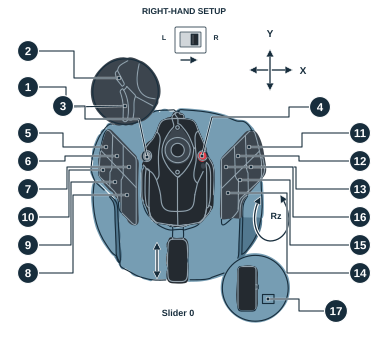
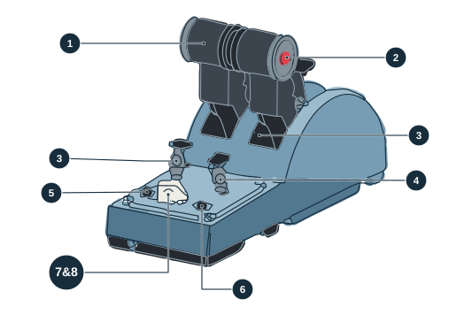
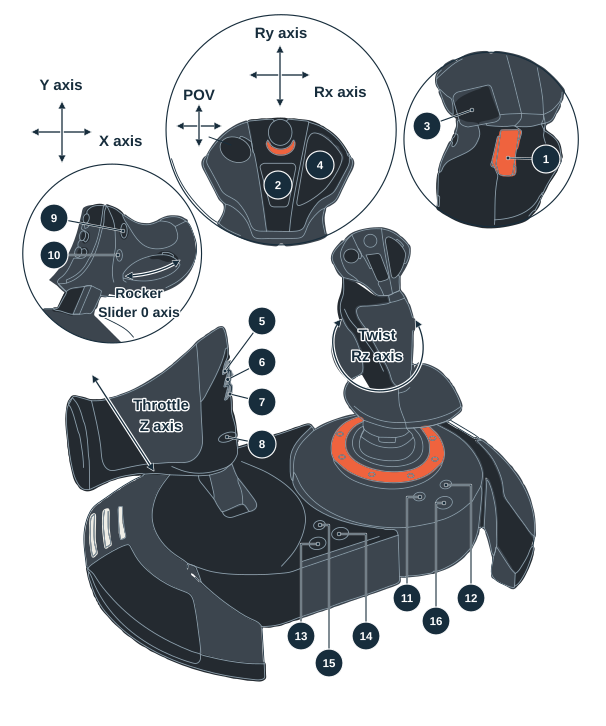

TCA source
Click a control, or press it during emulation. Its NEO mapping lights up.


T.Flight Hotas NEO
Virtual · AC8 nativeSelect a TCA control to light up its NEO targets

- Kept
- Added
- Removed
- Selected
Other TCA inputs
Sidestick hat drives
Pans the camera through the NEO mini-stick (Rx/Ry).
Hat directions
Detent states
Add-on inputs
NEO axes
NEO buttons · ACE COMBAT 8
16On the hardware, not in the NEO report—
Axes · raw → NEO
Start emulation to see the TCA and what the NEO receives.
State
TCA controls pressed
NEO buttons and POV
POV centred